The story of these hills is also a story of relationships built over time.
Across Tamenglong, Senapati and Noney, Assam Rifles has walked alongside communities — connecting through sport, education, healthcare, community initiatives and shared endeavour. The pages that follow offer a glimpse of that partnership.
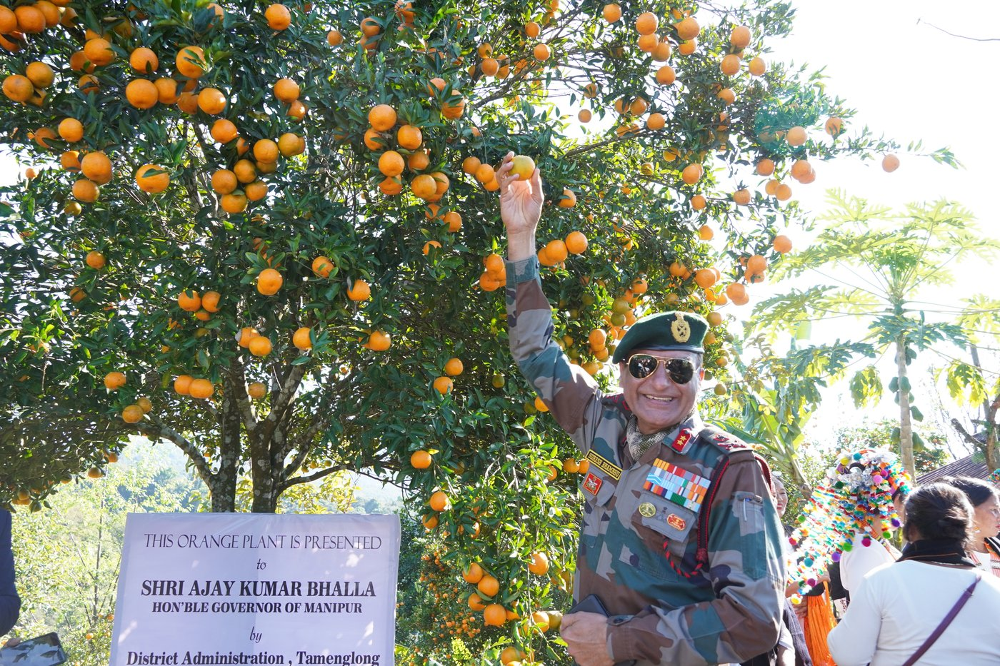
In the verdant hills of Tamenglong, where orange orchards glow like little suns, Assam Rifles procured 1,082 kg of locally grown oranges, giving a gentle boost to local production. The initiative supported local farmers and families, creating a reliable market and generating income from their harvest.
Beyond livelihood, it celebrated the region's indigenous produce and local culture, preserving traditions rooted in the land. Each orange thus became a symbol of hope, dignity and shared prosperity, strengthening Assam Rifles' enduring bond with the community.
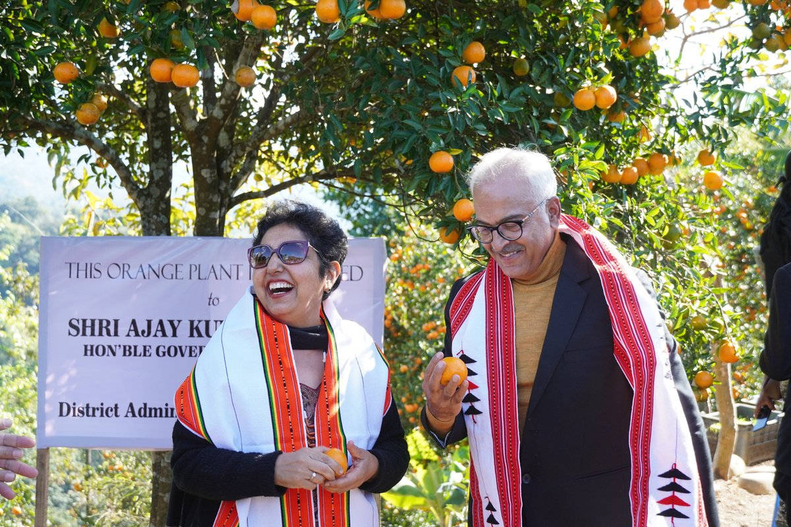
The Hon'ble Governor of Manipur, Shri Ajay Kumar Bhalla, was presented an orange plant by the District Administration, Tamenglong — a gesture connecting the region's leadership directly to the land, its farmers and its produce.
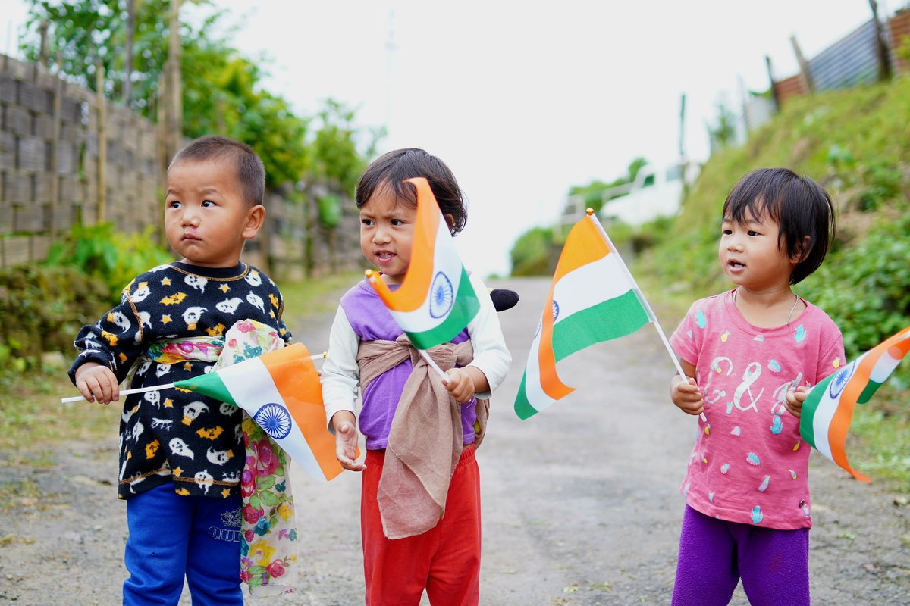
Community celebrations bringing villages and the forces together in shared national pride.
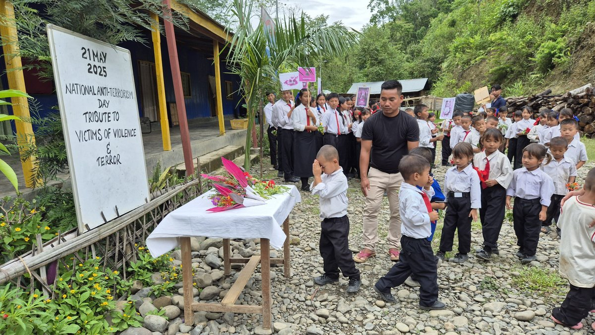
A tribute to victims of violence and terror, observed with local schoolchildren and communities.
Introducing local youth to emerging technology and new skills for the future.
Wellness outreach for the community.
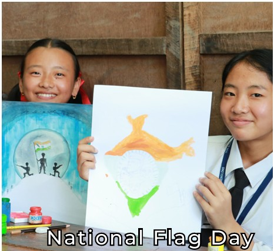
Honouring the nation together with local villages.
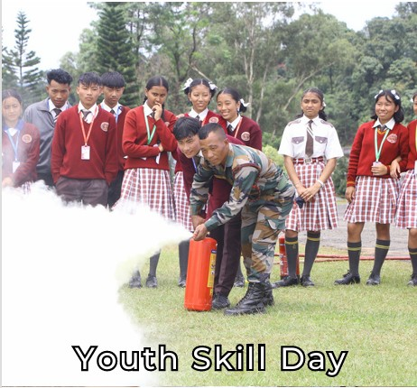
Building capability among the region's young people.
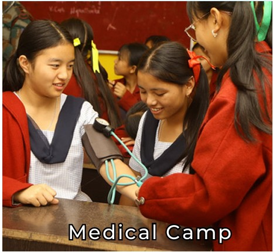
Healthcare access for remote communities.
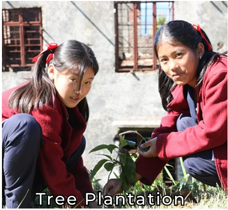
Environmental initiatives supporting the hills' ecology.
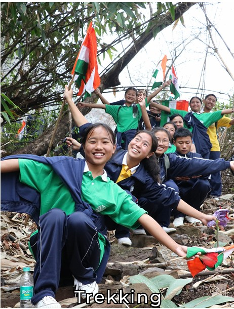
Joint expeditions building trust through shared adventure.
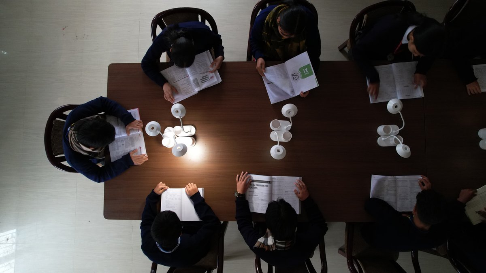
On 08 January 2025, Assam Rifles, under Operation Sadbhavana, opened an Indigenous Library and Resource Centre at Zeliangrong Evangelistic Fellowship, Gospel Centre, Tamenglong. More than a library, it is a bridge between heritage and young minds — preserving the rich knowledge, traditions and voices of Northeast India through books and study materials.
Witnessed by nearly 200 locals, youth and children, the initiative reflects Assam Rifles' enduring commitment to nurturing education, intellectual growth and a brighter, culturally rooted future for the people.
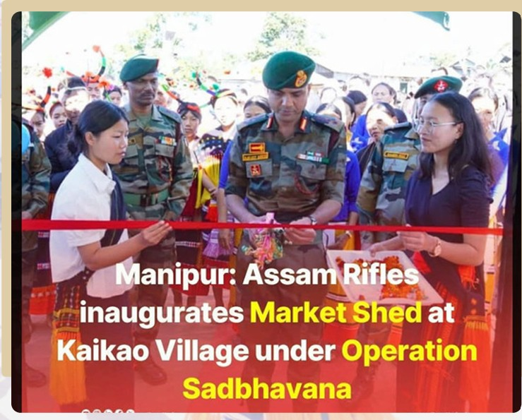
On 13 December 2025, Assam Rifles, under Operation Sadbhavana, handed over a market shed at Kaikao Village, Tamenglong — turning infrastructure into opportunity. Built to nurture sustainable livelihoods, it offers local vendors and women entrepreneurs a stronger platform to earn, grow and dream.
Amid the warmth of villagers, community leaders and youth, traditional dance added colour to the occasion, celebrating heritage and unity. More than a marketplace, it stands as a symbol of self-reliance, inclusive growth and Assam Rifles' enduring bond with the people.
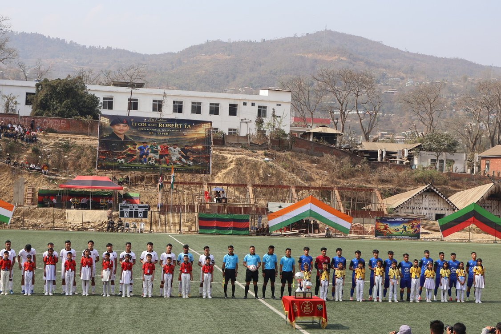
In memory of Late Lt Col Robert Kuba, a brave son of the Maram Naga community who made the supreme sacrifice in North Sikkim in 2020, the Robert Cup carries forward a legacy of courage, adventure and sporting spirit.
Organised by Assam Rifles, the annual football tournament transforms remembrance into celebration, bringing together youth, communities and security forces through the beautiful game. More than a contest, it is a bridge of friendship and trust — nurturing young talent, inspiring dreams and strengthening bonds between the people and the forces who serve them.
Across these hills, every road has led us somewhere different — to landscapes of remarkable beauty, traditions shaped over generations, and above all, to the people who give this land its character.
JOURNEY began as an attempt to reveal a lesser-seen side of Manipur. But no collection of photographs or words can fully capture what it feels like to stand among these hills, walk their trails, share in their celebrations or experience the warmth of their communities. Perhaps that is how it should be. Some stories are meant to be read. Others are meant to be lived.
The road awaits.